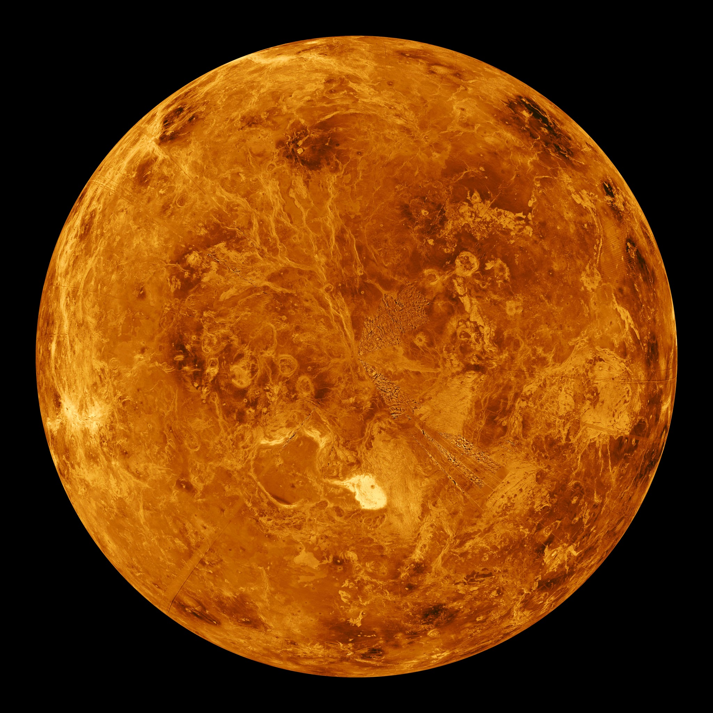
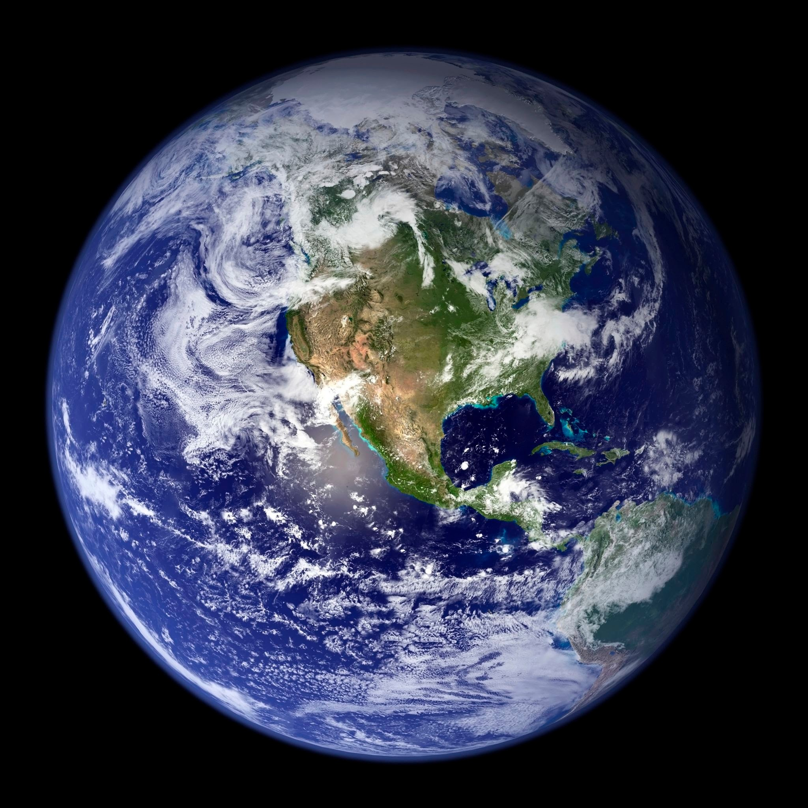

Astronomy is a natural science that studies celestial objects and the phenomena that occur in the cosmos. It uses
mathematics, physics, and chemistry in order to explain their origin and their overall evolution. Objects of
interest include planets, moons, stars, nebulae, galaxies, meteoroids, asteroids, and comets. Relevant phenomena
include supernova explosions, gamma ray bursts, quasars, blazars, pulsars, and cosmic microwave background
radiation. More generally, astronomy studies everything that originates beyond Earth's atmosphere. Cosmology is
a branch of astronomy that studies the universe as a whole.
Astronomy is one of the oldest natural sciences. The early civilizations in recorded history made methodical
observations of the night sky. These include the Egyptians, Babylonians, Greeks, Indians, Chinese, Maya, and
many ancient indigenous peoples of the Americas. In the past, astronomy included disciplines as diverse as
astrometry, celestial navigation, observational astronomy, and the making of calendars.
The James Webb Space Telescope (JWST)
The James Webb Space Telescope (JWST) is a space telescope designed to conduct infrared
astronomy.
Its high-resolution and high-sensitivity instruments allow it to view objects too old, distant,
or faint for the Hubble Space Telescope. This enables investigations across many fields of
astronomy and cosmology, such as observation of the first stars and the formation of the
first galaxies, and detailed atmospheric characterization of potentially habitable exoplanets.
The Webb was launched on 25 December 2021 on an Ariane 5 rocket from Kourou, French Guiana.
In January 2022 it arrived at its destination, a solar orbit near the Sun Earth L2 Lagrange
point, about 1.5 million kilometers (930,000 mi) from Earth. The telescope's first image was
released to the public on 11 July 2022.
The U.S. National Aeronautics and Space Administration (NASA) led Webb's design and development
and partnered with two main agencies: the European Space Agency (ESA) and the Canadian Space Agency
(CSA).
The NASA Goddard Space Flight Center (GSFC) in Maryland managed telescope development,
while the Space Telescope Science Institute in Baltimore on the Homewood Campus of
Johns Hopkins University operates Webb. The primary contractor for the project was Northrop Grumman.
The telescope is named after James E. Webb, who was the administrator of NASA from 1961 to 1968
during the Mercury, Gemini, and Apollo programs.
Features
The mass of the James Webb Space Telescope is about half that of the Hubble Space Telescope.
Webb has a 6.5 m (21 ft)-diameter gold-coated beryllium primary mirror made up of 18 separate
hexagonal mirrors. The mirror has a polished area of 26.3 m2 (283 sq ft), of which 0.9 m2 (9.7 sq ft)
is obscured by the secondary support struts, giving a total collecting area of 25.4 m2 (273 sq ft).
This is over six times larger than the collecting area of Hubble's 2.4 m (7.9 ft) diameter mirror, which
has a collecting area of 4.0 m2 (43 sq ft). The mirror has a gold coating to provide infrared
reflectivity and this is covered by a thin layer of glass for durability.
Webb is designed primarily for near-infrared astronomy, but can also see orange and red visible light,
as well as the mid-infrared region, depending on the instrument being used.It can detect objects up to
100 times fainter than Hubble can, and objects much earlier in the history of the universe, back to
redshift z≈20 (about 180 million years cosmic time after the Big Bang).For comparison, the earliest
stars are thought to have formed between z≈30 and z≈20 (100–180 million years cosmic time), and the
first galaxies may have formed around redshift z≈15 (about 270 million years cosmic time).
Hubble is unable to see further back than very early reionization at about z≈11.1
(galaxy GN-z11, 400 million years cosmic time).
Solar System


Mercury
Mercury is the first planet from the Sun and the smallest in the Solar System.
In English, it is named after the Roman god Mercurius, god of commerce and communication, and the
messenger of the gods.
Mercury is classified as a terrestrial planet, with roughly the same surface gravity as Mars.
Venus
Venus is the second planet from the Sun. It is a terrestrial planet and is the closest
in mass and size to its orbital neighbour Earth. Venus is notable for having the densest
atmosphere of the terrestrial planets, composed mostly of carbon dioxide with a thick, global sulfuric
acid cloud cover.
Earth
Earth is the third planet from the Sun and the only astronomical object known to harbor life.
This is enabled by Earth being a water world, the only one in the Solar System sustaining liquid surface
water.
Almost all of Earth's water is contained in its global ocean, covering 70.8% of Earth's crust.